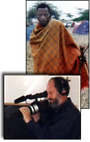

- film -
Woo leaves Asia's Hollywood with a bang, in his film Hard Boiled. . Asian Action Film Images 2 THE MOVIE SHELF'S ASIAN ACTION FILM IMAGES - GROUP 2 Chop Sockey action with John Liu. This film is also known as Incredible Kung Fu Mission. John Woo gives birth to Hong Kong heroic bloodshed via bullets in A Better Tomorrow.
 |
They seem to be much more lifelike (if we can use that word) than the alien shown in the purported Roswell Film. . Three Early Non-Roswell Film Images These images were obtained from various people who I have talked with online that seem to be link to the Roswell Incident and may be a good approximation of parts of the Roswell Film which Merlin Productions has. For now, until more footage of the film is shared, we hope this can provide some visual examples of what might have been connected with Roswell. Three Images from the Roswell Autopsy Film Finally, some scanned images sent to us by Michael T.
|  |
Home About Contact HELP producers Notification list Press Privacy Search Submit your film . . The e screening room supports the nonfiction documentary film maker and documentary community. Mustang America Unabridged documentary film (26 min. Elvis Presley) By Robert Jaye and Walter Hoylman It is said that only subscribers to the confidential notification list get sneak previews in the BIG e screening room.
-This is a shortened version of "London Can Take It. (Note this newsreel compilation was not seen in Britain. ) BUILDERS, THE (Workers' Film Association and Selwyn Films). (January, 1940 ) COASTAL DEFENCE (British Movietonews). (October, 1940) FLYING TO AUSTRALIA WITH IVAN SCOTT (Spectator).
also look at: http://www.amazon.com/exec/obidos/redirect?tag=film600&path=tg/browse/-/163379
.